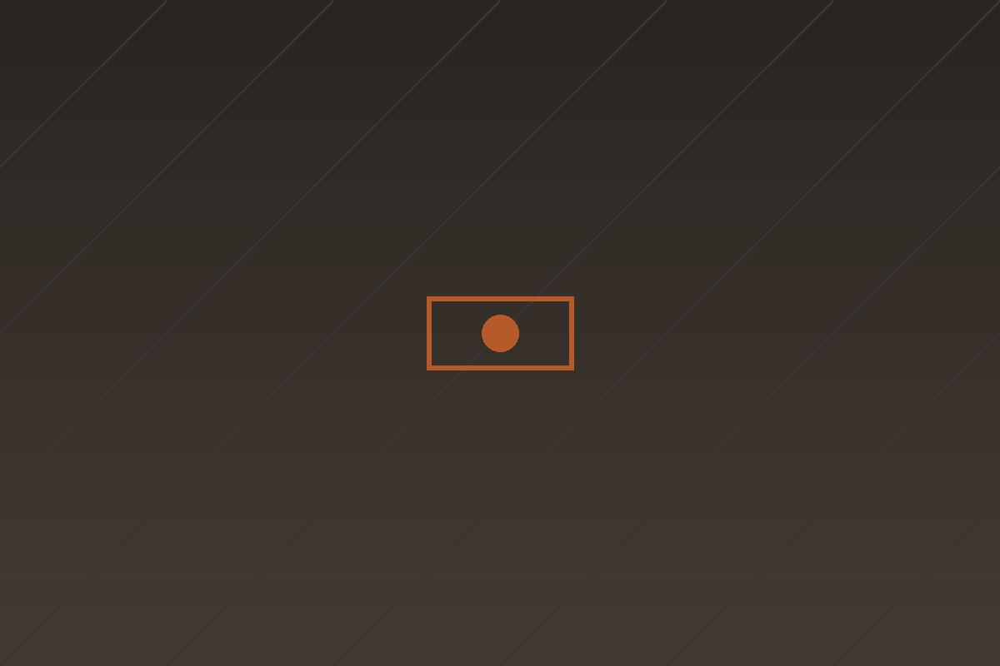
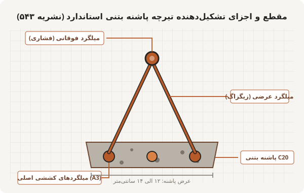

خرپایی
تیرچه پاشنه بتنی استاندارد
متداولترین نوع تیرچه در سقفهای بتنی؛ دارای خرپای فولادی، میلگرد بالایی فشاری، میلگردهای کششی پایینی در بتن پاشنه C20 و میلگرد تقویتی (اوورکات) در وسط دهانه مطابق نشریه ۵۴۳.
پوشش ساختمان در کنار تولید بتن آماده، خط تولید مجهز انواع تیرچههای ساختمانی را به عنوان مکمل اصلی اجرای سقفهای تیرچه و بلوک راهاندازی نموده است. تمامی مراحل تولید شامل برش، فرمدهی میلگردهای زیگزاگ، جوش خرپا و بتنریزی پاشنه تحت نظارت مستمر واحد کنترل کیفیت انجام میپذیرد.

خط تولید کارخانهبر اساس دهانه سقف، کاربری و بارهای مرده و زنده طراحی، انواع تیرچههای زیر در خط تولید کارخانه عرضه میشوند:
متداولترین نوع تیرچه در سقفهای بتنی؛ دارای خرپای فولادی، میلگرد بالایی فشاری، میلگردهای کششی پایینی در بتن پاشنه C20 و میلگرد تقویتی (اوورکات) در وسط دهانه مطابق نشریه ۵۴۳.
تولید با دستگاههای تماماتوماتیک صنعتی؛ در این روش اعضای خرپا به صورت همزمان با جوش نقطهای الکتریکی به هم متصل میشوند که از سوختگی و کاهش مقاومت مقطع میلگرد جلوگیری مینماید.
دارای بال تحتانی تسمه فولادی و بال فوقانی نبشی؛ قابلیت تحمل بار بتنریزی بدون نیاز به شمعبندی و جک در دهانههای متوسط که سرعت اجرای سقف را تا دو برابر افزایش میدهد.
برای دهانههای بیش از ۶ متر یا بارهای سنگین تجاری و پارکینگ؛ تقویت میلگردهای کششی و زیگزاگ دوبل جهت کنترل خیز و لرزش سقف مطابق ضوابط مبحث نهم.

مشخصات ابعادی و میلگردهای مصرفی در تیرچههای استاندارد تکتیرچه برای بار مرده و زنده مسکونی متعارف:
| طول دهانه (متر) | ارتفاع خرپا (cm) | میلگرد فوقانی | میلگردهای اصلی تحتانی | میلگرد تقویتی (اوورکات) | قطر زیگزاگ (mm) |
|---|---|---|---|---|---|
| تا ۳.۵ متر | ۲۰ الی ۲۵ سانتیمتر | ۱ عدد میلگرد ۱۰ | ۲ عدد میلگرد ۱۰ (A3) | بدون نیاز | ۵.۵ میلیمتر ساده |
| ۳.۵ الی ۴.۵ متر | ۲۵ سانتیمتر | ۱ عدد میلگرد ۱۲ | ۲ عدد میلگرد ۱۲ (A3) | ۱ عدد میلگرد ۱۰ (A3) | ۶ میلیمتر |
| ۴.۵ الی ۵.۵ متر | ۲۵ سانتیمتر | ۱ عدد میلگرد ۱۲ | ۲ عدد میلگرد ۱۴ (A3) | ۱ عدد میلگرد ۱۲ (A3) | ۶.۵ میلیمتر |
| ۵.۵ الی ۶.۵ متر | ۲۵ الی ۳۰ سانتیمتر | ۱ عدد میلگرد ۱۴ | ۲ عدد میلگرد ۱۶ (A3) | ۱ عدد میلگرد ۱۴ (A3) | ۸ میلیمتر (زیگزاگ تقویتشده) |
| بیش از ۶.۵ متر | ۳۰ سانتیمتر | نیاز به تیرچه دوبل یا تیرچه کرومیت / محاسبات اختصاصی دفتر فنی | |||
مشخصات دهانهها و نیاز سقف پروژه خود را در فرم زیر وارد نمایید تا کارشناسان فنی کارخانه پیشفاکتور دقیق به همراه لیست قطعات را محاسبه و ارسال نمایند.